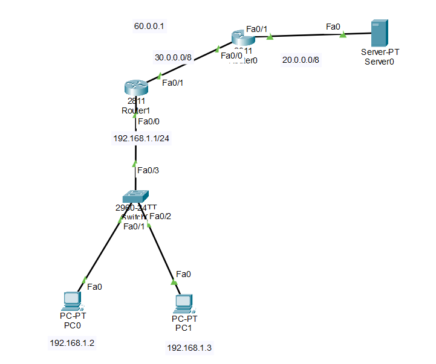

Here router0 acts as Gateway router & router1 acts as ISP router.
Router0:
Router(config)#int f 0/0
Router(config-if)#ip add 30.0.0.2 255.0.0.0
Router(config-if)#no sh
Router(config-if)#exit
Router(config)#int f 0/1
Router(config-if)#ip add 20.0.0.1 255.0.0.0
Router(config-if)#no sh
Router(config-if)#exit
Router(config)#ip route 0.0.0.0 0.0.0.0 f 0/1
Router1:
Router(config)#int f 0/0
Router(config-if)#ip add 192.168.1.1 255.255.255.0
Router(config-if)#no sh
Router(config-if)#exit
Router(config)#int f 0/1
Router(config-if)#ip add 30.0.0.1 255.0.0.0
Router(config-if)#no sh
Router(config-if)#exit
Router(config)#ip route 0.0.0.0 0.0.0.0 f 0/1
Router0:
Router(config)#access-list 10 permit 192.168.1.0 0.0.0.255
Router(config)#ip nat pool ccna 60.0.0.1 60.0.0.1 netmask 255.0.0.0
Router(config)#ip nat inside source list 10 pool ccna overload
Router(config)#int f 0/0
Router(config-if)#ip nat inside
Router(config-if)#no sh
Router(config-if)#exit
Router(config)#int f 0/1
Router(config-if)#ip nat outside
Router(config-if)#no sh
Router(config-if)# exit
To Verify:
Router#Show ip nat translations